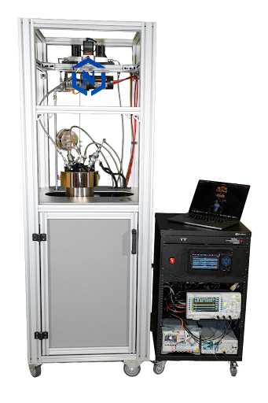

Decades of fundamental research has studied novel electronic, magnetic, photonic, biosensing, and quantum properties in nanoparticles and nanowires. However, much of the utility from these properties has not been able to be leveraged due to an inability to reliably pattern these materials into devices. One current approach is laboratory scaled dielectrophoretic assembly that suffers from low patterned area and contamination due to microfluidic channel application and disruption of particles during drying. Another is blanket deposition such as the RINSE method for carbon nanotubes that has limited material selection and the inability to access individual wires/particles reduced and architectural inflexibility. nTessimal seeks to enable manufacturability of deterministically placed nanoparticle based devices through their novel patent pending assembly chambers.
nTessimal's chambers enable the full wafer assembly of any nano and microparticle that can be suspended in solution. These particles in solution are flown between a substrate with patterned AC electrodes with opposing counterelectrode. Utilizing a DC bias between the substrate and counterelectrode nanoparticles are moved closer to the substrate’s surface removing the need for microfluidic channels. Once within range of the dielectrophoretic force generated by the AC voltage generated by electrodes on the substrate and the polarizability of the particle relative to the solution, this force deterministically positions the nanoparticles. Once assembled the position of the nanoparticles is maintained with zero surface tension supercritical drying.

This low temperature nanoparticle assembly process is CMOS compatible, and nanowires and nanoparticles with a wide range of properties can be assembled within one system. Given this topological flexibility it is difficult to determine all possible applications. However, uses in a wide variety of electronics have been proposed in literature studying nanoparticles.
These include:
Copyright © 2026 nTessimal, LLC